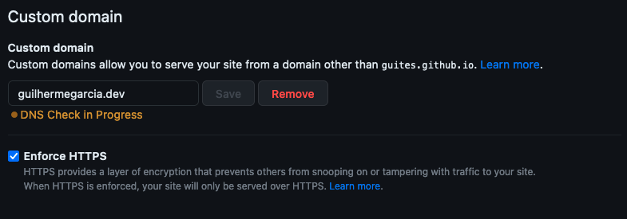

Entendendo diretivas básicas do nginx
Esse post tem um levantamento sobre alguns valores usados no arquivo de configuração do nginx, que geralmente são copiados e colados de um lado pro outro sem muita reflexão:
- server_name
- try_file
- fastcgi_pass
- fastcgi_param
server_name
O uso da diretativa server_name está ligada ao jeito com o qual o nginx processa o recebimento de requisições. Com o nginx, podemos rodar vários projetos (servers) em uma mesma porta, com diferentes nomes.
Um exemplo básico é um arquivo default.conf com os seguintes valores:
server {
listen 80;
server_name example.org www.example.org;
...
}
server {
listen 80;
server_name example.net www.example.net;
...
}
server {
listen 80;
server_name example.com www.example.com;
...
}
Digamos que essa configuração está rodando numa máquina virtual de IP fixo, por exemplo, 52.58.199.22. A escolha do server que vai retornar a requisição é baseada no cabeçalho Host.
Por exemplo, o request
curl -H "Host: example.net" 52.58.199.22
vai ser direcionado para o segundo bloco server definido na configuração.
Um exemplo mais prático (o ip fixo acima é inventado) é usando o domínio do próprio blog, que é hospedado no GitHub Pages (que parece usar nginx).
Outra forma de verificar que o github pages usa nginx é forçando um redirect
Como o github pages possui uma opção para forçar o redirecionamento de http para https, podemos visualizar um rastro do nginx ao fazer um request na porta :80.

curl http://guilhermegarcia.dev
guites@macos blog % curl http://guilhermegarcia.dev
<html>
<head><title>301 Moved Permanently</title></head>
<body>
<center><h1>301 Moved Permanently</h1></center>
<hr><center>nginx</center>
</body>
</html>
O IP fixo do blog é 185.199.111.153. Você pode verificar com
dig guilhermegarcia.dev +short
185.199.111.153
Se tentarmos um acesso com um Host diferente do definido na sua configuração, o acesso não vai ser encontrado:
curl -i -H "Host: notguilhermegarcia.dev" 185.199.111.153
HTTP/1.1 404 Not Found
...
..
<h1>404</h1>
<p><strong>There isn't a GitHub Pages site here.</strong></p>
.
.
Mas, com o Host esperado, funciona:
curl -i -H "Host guilhermegarcia.dev" 185.199.111.153
HTTP/1.1 301 Moved Permanently
Location: https://guilhermegarcia.dev/
...
..
<head><title>301 Moved Permanently</title></head>
<body>
<center><h1>301 Moved Permanently</h1></center>
(e somos redirecionados pra versão https do site).
mais informações: http://nginx.org/en/docs/http/request_processing.html
try_file
Essa diretiva testa a url acessada uma vez em cada caminho definido, em relação ao root definido na configuração, e aceita um valor de fallback, ou seja, uma url ou arquivo a ser carregado caso o arquivo não seja encontrado em nenhum dos caminhos.
Para uma configuração como a abaixo
server {
listen 80;
server_name localhost;
root /var/www/html;
index index.html;
charset utf-8;
location / {
try_files /app/$uri $uri =404;
}
}
e uma requisição assim
curl localhost/arquivo.html
O servidor vai tentar achar um arquivo para a url acessada na seguinte ordem:
- /var/www/html/app/arquivo.html
- /var/www/html/arquivo.html
E, se não encontrar, vai mostrar o erro 404 padrão do nginx.
Na seguinte estrutura de arquivos,
/var/www/html
/var/www/html/app
/var/www/html/app/app.html
/var/www/html/index.html
Uma requisição em localhost/app.html iria funcionar, assim como uma em localhost/index.html.
mais informações: https://serverfault.com/a/329970
diretivas fastcgi_
Para sites dinâmicos (geralmente em PHP ou perl) o nginx é usado em conjunto com o FastCGI para interpretar os arquivos acessados como scripts ao invés de serví-los como texto (expondo o código fonte na página).
O FastCGI dispara processos que completam a lógica da requisição e retornam seu resultado pro servidor HTTP, que no caso do nginx, serve o resultado como html.
Pra gerenciar isso, são usadas as diretivas fastcgi_, e as mais comuns são:
- fastcgi_pass: define para qual processo o nginx deve enviar a requisição usando o protocolo fastCGI. Geralmente aponta pra um servidor rodando
php-fpm. - fastcgi_param: define informações extras que devem ser enviadas junto com a requisição pelo protocolo fastCGI. Geralmente são enviadas aqui informações sobre os cabeçalhos HTTP da requisição e o arquivo acessado (URI da requisição).
A configuração para deploy recomendada como ponto de partida pelo Laravel tem o seguinte:
location ~ \.php$ {
fastcgi_pass unix:/var/run/php/php8.1-fpm.sock;
fastcgi_param SCRIPT_FILENAME $realpath_root$fastcgi_script_name;
include fastcgi_params;
}
Ou seja, requisições direcionadas a arquivos .php vão ser repassadas para o socket rodando o php-fpm na máquina, junto com o caminho para o arquivo requisitado ($realpath_root é o caminho absoluto até o arquivo acessado e $fastcgi_script_name é a URI da requisição).
mais informações: https://en.wikipedia.org/wiki/FastCGI, https://www.php.net/manual/en/install.fpm.php, https://pt.stackoverflow.com/a/134473/289428, https://www.linode.com/docs/guides/how-to-configure-nginx/